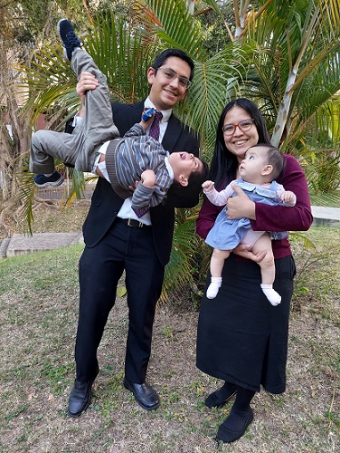

Hello everyone, my name is Jorge Gaytan but everyone calls me jorgito, I have been married to Francys for six years, and we have two wonderful kids. I was born in Merida, Venezuela but now we live in Germany, I love my country, we have hundreds of natural wonders.
I have been a member of the Church of Jesus Christ of Latter-day Saints since I was 8 years old, now I am 32, and I know that Jesus Christ is my redeemer.
I worked in the Caracas Venezuela Temple, as Clerical Leader, until three months ago, It was a privilege to be in the house of the Lord every day, I want to improve my work by getting a BS in Applied Technology, and I am exploring if I have the talent to do it.
One thing that i love from BYUI is the level of good istruccion, wish is so hard to find in my country, and that is a blessing for us
In my free time I love exploring nature, cooking "arepas" (a typical dish here) with friends and practicing many sports.
In Venezuela we are all like a brother, we trust each other quickly and we do not know what is worth, so write me if you need help or answer any question